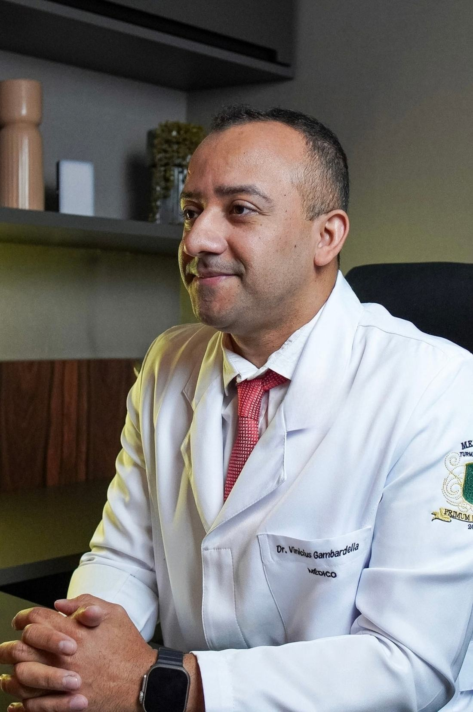

Médico em Aracaju, Sergipe
Saúde explicada com clareza. Cuidado para você e sua família.
Sou o Dr. Vinícius Gambardella Souza, médico em Aracaju. Acredito que informação confiável e uma escuta atenta fazem parte do cuidado com a saúde em todas as fases da vida.
Sobre mim
Olá, sou o Dr. Vinícius Gambardella Souza.
A medicina, para mim, tem um propósito que vai além de tratar sintomas: é estar presente, ouvir com atenção e ajudar cada pessoa a compreender melhor a própria saúde. Acredito em um cuidado humanizado, que considera a história, a rotina e as necessidades de cada paciente.
Meu objetivo é aproximar a informação médica do dia a dia, traduzindo assuntos de saúde de forma simples, responsável e acessível. Quero que você se sinta à vontade para buscar orientação, esclarecer dúvidas e cuidar de si e de quem ama.
Também acredito que o cuidado com a saúde começa cedo. Por isso, os temas relacionados à infância, ao desenvolvimento e às dúvidas das famílias fazem parte importante da minha comunicação e da minha atuação.
Agendar consultaLocais de atendimento
Cuidado próximo, em diferentes momentos e lugares.
O atendimento é pensado para acolher as necessidades de cada pessoa, com escuta, atenção e orientação individualizada.
-
Centro Médico Alecrim
Atendimento presencial
Para consultar disponibilidade, horários e informações sobre a unidade, entre em contato pelo WhatsApp.
Rodovia João Bebe Água, 1623, Madre Paulina, São Cristóvão/SE WhatsApp (79) 99920-4776 Agendar no Alecrim -
Centro Médico Humanizado de Sergipe
Atendimento presencial
Atendimento com foco em uma relação próxima e acolhedora. Consulte a disponibilidade de agenda e as orientações para marcação.
Rua Mariano Salmeron, 388, Siqueira Campos, Aracaju/SE Telefone (79) 98869-7666 Ligar para agendar -
Consultas a domicílio
Na sua casa, mediante disponibilidade
Para situações em que o atendimento em casa seja adequado, consulte previamente a disponibilidade, a região atendida e as condições para agendamento.
WhatsApp (79) 99825-1112 Consultar horários e agendar
Conteúdos sobre saúde
Informação confiável para cuidar melhor de você e da sua família.
Reunimos aqui respostas para dúvidas comuns sobre saúde geral e saúde infantil. Informação clara é um passo importante para escolhas mais conscientes, mas cada pessoa precisa ser avaliada de acordo com sua própria condição de saúde.
Quando a febre de uma criança merece avaliação médica?
A febre é um sinal de que o organismo está reagindo a alguma situação, mas a idade da criança, o estado geral e os sintomas associados fazem diferença. Bebês com menos de 3 meses e temperatura de 38 °C ou mais precisam de avaliação médica imediata. Em qualquer idade, procure atendimento se houver dificuldade para respirar, sonolência excessiva, sinais de desidratação, convulsão, manchas que não desaparecem à pressão ou piora importante do estado geral. Não medique por conta própria.
Toda gripe ou resfriado precisa de antibiótico?
Não. Resfriados e grande parte das infecções respiratórias são causados por vírus, e antibióticos não agem contra vírus. O uso inadequado pode causar efeitos adversos e favorecer resistência bacteriana. A necessidade de antibiótico depende de avaliação clínica e deve ser definida por um profissional de saúde.
Como saber se meu filho está se alimentando bem?
Mais importante do que comparar a quantidade que uma criança come com a de outras é acompanhar seu crescimento, desenvolvimento, disposição e variedade alimentar ao longo do tempo. Ofereça alimentos adequados à idade, respeite os sinais de fome e saciedade e evite transformar as refeições em disputa. Se houver perda de peso, dificuldade persistente para comer ou preocupação com o crescimento, converse com o médico que acompanha a criança.
Vacinas atrasadas: é preciso começar o calendário novamente?
Na maioria das situações, não é necessário reiniciar todo o esquema. A equipe de saúde verifica quais doses foram aplicadas e orienta a atualização conforme a idade e o histórico vacinal. Leve a caderneta de vacinação à unidade de saúde ou à consulta para receber a orientação correta. Não deixe de vacinar por acreditar que perdeu o prazo.
Criança que ronca ou respira pela boca deve ser avaliada?
Ronco frequente, respiração pela boca, sono agitado ou pausas na respiração durante o sono merecem atenção. Esses sinais podem ter diferentes causas e precisam ser avaliados considerando a história e o exame da criança. Se houver pausas respiratórias, esforço para respirar ou coloração arroxeada, procure atendimento de urgência.
Quando devo levar meu filho ao médico mesmo que ele pareça bem?
As consultas de acompanhamento ajudam a observar crescimento, desenvolvimento, alimentação, sono, vacinação e prevenção, mesmo quando não há sintomas. A frequência depende da idade e das necessidades de cada criança. Mantenha o acompanhamento recomendado e procure avaliação sempre que surgir uma mudança persistente ou uma preocupação relevante.
As informações desta seção têm finalidade educativa e não substituem uma consulta médica, avaliação individual ou atendimento de urgência. Cada pessoa deve receber orientação considerando seu histórico e suas condições de saúde. Em situações de emergência, procure um serviço de pronto atendimento ou acione o serviço de emergência.
Acompanhe conteúdos, orientações gerais e um pouco da minha rotina médica.
Vamos conversar sobre seu atendimento?
Para consultar horários, confirmar o local de atendimento ou verificar a disponibilidade de consultas a domicílio, entre em contato pelo WhatsApp. Nossa equipe poderá orientar você sobre os próximos passos para o agendamento.
Falar pelo WhatsApp- Consultas a domicílio (79) 99825-1112
- Centro Médico Alecrim (79) 99920-4776
- Centro Médico Humanizado (79) 98869-7666